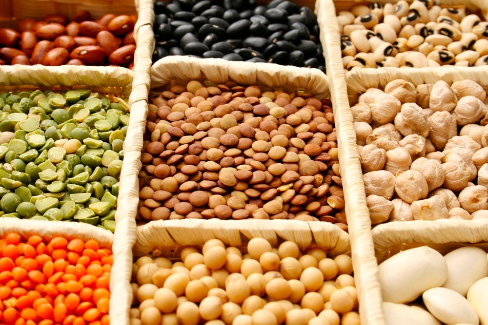

Instructions
1. You can choose any mandi of your choice to buy crops provided check the availability
2. Once order is confirmed you are supposed to reach out to the mandi to collect it
3. Payment is to be done at mandi
4. You need to sign up and login to place any order
Benefits
All the material is collected from a single mandi so transportation charges reduce by a large margin
Abundant quantity of crops can be purchased from single point of source

Different grade of quality grains are available. You can purchase the crops of different quality based on your requirement